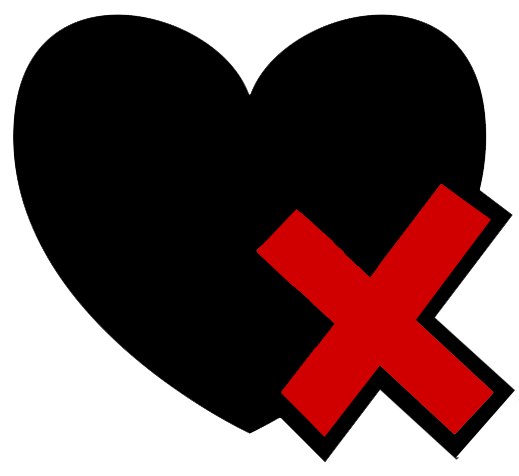

<ion-header>
  <ion-toolbar>
    <ion-title id="hola">
      <div>
        <p id="letra">5 Minutu!</p>
      </div>


    </ion-title>
  </ion-toolbar>
</ion-header>

<ion-content class="header-md">
  <div class="portada">
    <div class="punto">
      
      <ng-template #elseBlock></ng-template>
      <ion-label>Puntuazioa</ion-label>
    </div>

    <div class="ion-text-center">
      <a routerLink="/galdera"></a><br>
      
    </div>
  </div>
</ion-content>